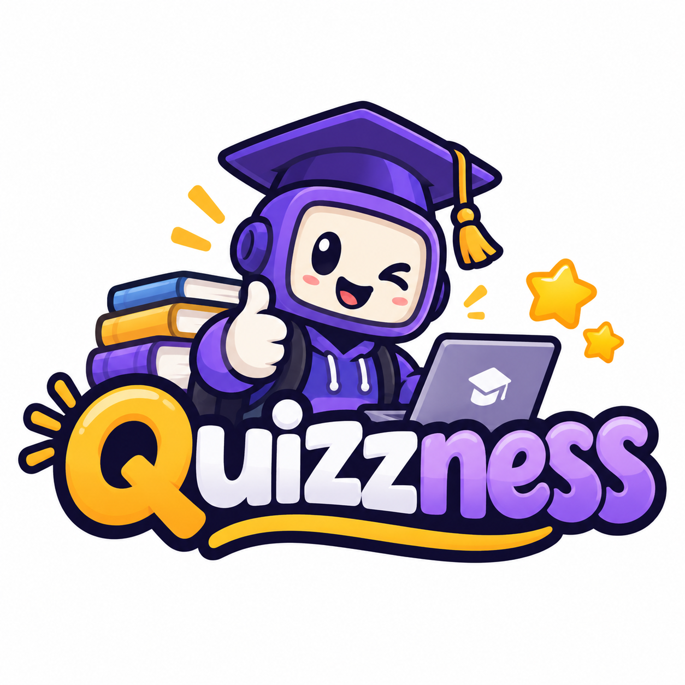

Choose a topic
Find a practice activity linked to what you are learning.
A student venture · COMP1170
Quizzness would turn course material into short quiz minigames, connect mistakes to useful explanations and help students find screened peer support for the same topic. Approved tutors could record eligible service hours in a GiveBack Wallet.
Try a sample questionVenture name: Quizzness. Slogan: Quizzness over pleasure.
Visual identity: the supplied purple-and-gold logo and pixel tiger mascot. Name research and asset credits.
Venture proposal and static prototype.

The problem & the people
Our starting problem is the gap between following an explanation and applying it independently. We want to support students practising after class, especially before coursework or an exam.
Core digital service: reviewed course minigames, explanatory feedback, topic-focused retries and a route to screened peer tutoring. Primary prototype action: choose a topic, answer a short quiz and review the explanation.
Our proposed first users are tertiary students in Barbados. Subjects could include mathematics, accounting, languages and computing; CSEC/CAPE and other Caribbean institutions would be later expansion options. Institutions would review content and coordinate peer support. [9]
In our 28-response survey, 22 respondents (78.6%) reported understanding difficulties at least sometimes, and 20 (71.4%) sometimes or frequently stopped studying a difficult, confusing or boring topic. These findings describe our sample, not all students. [8, Q3] [8, Q6]
The concept
Quizzness is a proposed course-support platform combining reusable quiz minigames, explanations, retries and screened peer tutoring. An institution partner would review activities and approve any eligible GiveBack service hours. We would test two courses before expanding, with institutional licences as the proposed main revenue source. [9]
Find a practice activity linked to what you are learning.
Use the lesson in a short quiz rather than just rereading it.
Review the explanation and return to the topic that needs work.
See the proposed student journey →
Try the signup demonstration. The form uses sample details and sends no data.
Reviewed course templates could serve more learners without rebuilding each activity. More approved tutors could broaden subject coverage, while capable learners could later apply to tutor. These are proposed scaling mechanisms; screening and human tutoring would still require time and coordination.
Our next milestone
We are seeking a course partner and pilot sponsor to test usefulness, repeat use and content-review costs before expanding.
Read the pilot proposal →